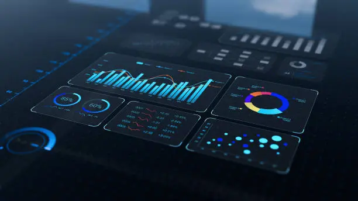

Arvel Bowers
Arvel Bowers founded Sentinel Advisory Group to independently deliver the work he spent two decades doing inside enterprises — protecting revenue when the cost of failure is high.
His career began in the U.S. Army, serving ten years with the 82nd Airborne Division and rising through the non‑commissioned officer ranks to Staff Sergeant. That tour shaped his foundation in disciplined execution, mission clarity, and leadership under pressure.
After the Army, Arvel moved into Big Four advisory at PricewaterhouseCoopers and Dixon Hughes Goodman, gaining the engagement‑delivery discipline most advisors build their careers on. He then spent the next fifteen years as an enterprise operator — inside a global bank, a global manufacturer, an enterprise‑software company, two healthcare organizations, and specialty software and healthcare‑payments firms.
Working across these industries gave him something most advisors never get: a direct operator’s view of how revenue is won, lost, and recovered in very different businesses. Across those roles, he led multi‑hundred‑million‑dollar programs — including a $450M portfolio at Moffitt Cancer Center — and built critical‑account recovery functions trusted to retain the relationships an organization can least afford to lose.
The combination — Big Four training plus deep cross‑industry operator experience — is the uncommon foundation Sentinel Advisory Group is built on. Most advisors are consultants who have never carried a P&L. Most operators have never been trained inside a major advisory firm. Arvel is both.
Schedule a CallThe Founding Thesis
Sentinel Advisory Group exists for a specific reason. After two decades of watching executives navigate high‑stakes operational moments — critical accounts slipping, transformations stalling, revenue exposed — our founder saw that the help available to mid‑market leaders was often the wrong shape.
Large consulting firms are priced out of reach for the mid‑market. Generic solo advisors lack the operating depth to lead through pressure. Internal teams are too close to the problem to see it clearly.
Sentinel was built to fill that gap: Fortune‑500‑grade judgment, delivered with operator‑level understanding, at fees mid‑market leaders can actually justify.
Schedule Consultation

Built for Moments Where Outcomes Matter
Sentinel Advisory Group was founded on a simple thesis: mid‑market leaders facing high‑stakes operational moments deserve access to the same caliber of judgment, clarity, and execution that Fortune 500 executives rely on. When revenue is exposed, critical accounts slip, or transformations stall, leaders need support shaped for pressure — not generic consulting.
$535M+ Healthcare portfolios built and enterprise revenue protected across two decades of operating leadership
4 Verticals - SaaS, Healthcare, Financial Services, Manufacturing
We deliver Fortune 500-grade judgment with operator-level understanding, at fees mid-market leaders can actually justify.